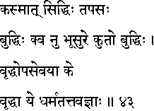
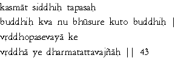

|

|
Verse 43 - Meaning:
Q: What causes (kasmaat) success (siddhih) ?
A: Concentrated efforts or the (tapas).
Q:Whose (kva) mind (buddhih) is always on the right track ?
A: Of one who honours holy men. (bhuu-sur-e)
Q:How is this state of mind produced (kuto buddhih) ?
A: Through respect for the advice of wise and elderly men.(vrddhopa-sevayaa)
Q:Who is an elderly man (as talked about above) (ke vrddhaa) ?
A: One who knows the essence of Dharma (morality). (ye-dharma-tattvajnaah)
|